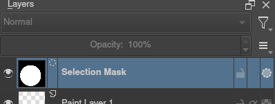

選取區域¶
選取區域用於選取圖稿的指定區域進行變更，依不同使用需求挑選使用不同的選取工具，它可以用於進行局部移動、變形或在特定區域內繪製而不影響其他區域。Krita的選取區域不限於畫布邊界內,還可以選擇邊界外的部份,當建立選取區域後所有工具只在範圍內執行作動。在區域內可以繪製或使用漸變快速著色及輪廓分明的陰影形狀。
建立選取區域¶
常見的選取區域工具位於工具箱底部。每個工具框選的方式略有不同,將游標移到工具的圖示上停留會有更詳細的描述說明。
|
選取矩形區域。 |
|
|
選取橢圓區域。 |
|
|
單擊每個點在你希望產生多邊形所在的位置。雙擊以結束多邊形並完成選擇區域。撤消最後一點使用 Shift + Z 快捷鍵。 |
|
|
徒手/套索工具透過在畫布上手繪輪廓粗略選取區域。 |
|
|
相似顏色選取工具。 |
|
|
默認限制在當前圖層使用連續工具或稱「魔術棒」選擇一個顏色區域。調整 模糊度 以變更相似顏色選取範圍。 |
|
|
使用向量路徑的建立來選取區域，點繫創建尖角或拖動以獲得曲線並使用 Enter 鍵或是直接點選初始點來封閉路徑。 |
|
|
磁性選取會在手繪輪廓中自動捕捉圖像裡鮮明對比的邊緣。 |


備註
你還可以對選取區域使用變形工具，這是在圖像各部位嘗試不同比例的好方法。
編輯選取區域¶
這個工具選項在於讓你能夠修改週整任一個選擇工具的選擇區域。
操作 |
切換鍵 |
描述 |
取代 |
Ctrl |
替換當前選取區域。 |
交集 |
Shift + Alt |
選取兩個選取區域重疊的部份。 |
潻加 |
Shift |
添加新的選取區域到當前選取區域範圍。 |
減去 |
Alt |
從當前選取區域減去選取區域範圍。 |
對稱差 |
-- |
添加新的選取區域到當前選取範圍，但是排除掉兩者重疊的範圍。 |
你可以在 工具設定 中更改設定。
在使用選取工具時將滑鼠移到選取範圍的邊緣，按住左鍵可以拖移範圍；單擊右鍵  並點選 編輯選取區域 可以快速進入編輯模式。
並點選 編輯選取區域 可以快速進入編輯模式。
取消選取¶
如果要刪除整個選擇，最簡單的方法是取消選擇所有內容。 。快速鍵 Ctrl + Shift + A 。當你正在執行任一項選擇工具時，在畫布中任意位置按下  可以取消當前選擇。
可以取消當前選擇。
顯示模式¶
狀態欄左下角按鈕可以切換選取區域顯示模式，在標準模式與快速遮色片模式中切換。快速遮色片模式預設為為紅色，可以 中變更。在沒有選取任何範圍狀況下按下按鈕不會有任何動作 。

標準顯示模式（默認）是用來查看未選擇區域的最佳選擇。

快速遮罩模式可以清楚看到選取區域不透明度狀況，例如選取區域使用羽化柔邊時。
在 4.2 版本變更: 當選擇任一快速遮罩為當前圖層時，快速遮罩模式會自動啟動。
全域選取遮罩（繪畫出選取區域）¶
你可以選擇在圖層工具面板顯示全域選取遮罩。默認為隱藏狀態，所以你需要經由 。
顯示全域選取遮罩時，你需要創建一個選擇才會顯示圖層。使用它的好處是你可以使用任意繪畫工具來創建選擇範圍，包含變形與移動。在這個模式下色彩為灰階。
您可以通過 從選擇工具中快速進入全域選取區域遮罩模式。並選擇 編輯選取區域。
自圖層透明度產生選取區域¶
你可以通過右鍵單擊圖層工具面板中的圖層並從上下文菜單中選擇 選取不透明區域 來創建基於圖層透明度的選區。
在 4.2 版本新加入: 你還可以通過轉到 來執行新增、差集和交集，你可以在選單中找到對應操作。
如果你想快速選擇圖層的一部分，你可以在圖層 縮圖 上按住 Ctrl + 。要新增選擇 Ctrl + Shift + ， 要刪除 Ctrl + Alt + 以及交集 Ctrl + Shift + Alt + 。這些組合鍵適用於除了變形遮罩外的任何不管是像素或向量的遮罩模式。
像素及向量選取區域類型¶
向量選擇可以使用矢量錨點工具修改選擇。像素選擇允許使用像素型態修改選擇。他們有各自的優缺點。您可以在兩種型態間切換使用。
創建選區時可以從選取工具選項中選擇你想要的模式：像素或向量。默認情況將是向量模式。
向量選取可以像任何其它 向量圖形 一樣使用 形狀選取工具 ，如果您嘗試在向量選擇遮罩上繪畫，它將被轉換為像素選取。你還可以將向量圖形轉換為選擇，反過來也可以將向量選取轉變為向量圖形，Krita 會為這個圖形添加一個新的向量圖層，圖形與選取的轉換可以使用 Selection 選單中的選項進行操作。 。
使用向量選取的最常見原因之一，是它們能夠移動和改變選區而不會像像素選取那樣變動到選擇細節。您還可以使用 形狀編輯工具 更改選區中的錨點，從而可以精確調整貝茲曲線或為矩形選擇添加新角。
如果是從像素選區開始，你仍然可以將其轉換為向量選區以獲得這些優點。到 。
備註
如果在將選區轉換為向量時有多個級別的透明度，將丟失半透明值。
選取區域作業的通用快捷鍵¶
複製-- Ctrl + C 或 Ctrl + Ins
貼上-- Ctrl + V 或 Shift + Ins
剪下-- Ctrl + X ， Shift + Del
從所有圖層複製-- Ctrl + Shift + C
複製選取內容到新圖層-- Ctrl + Alt + J
剪下選取內到到新圖層-- Ctrl + Shift + J
顯示或隱藏選取範圍切換 Ctrl + H
選取不透明區域 -- Ctrl +
在圖層縮圖上。選取不透明區域(添加) -- Ctrl + Shift +
在圖層縮圖上。選取不透明區域 (減去) -- Ctrl + Alt +
在圖層縮圖上。選取不透明區域(交集) -- Ctrl + Shift + Alt +
在圖層縮圖上。